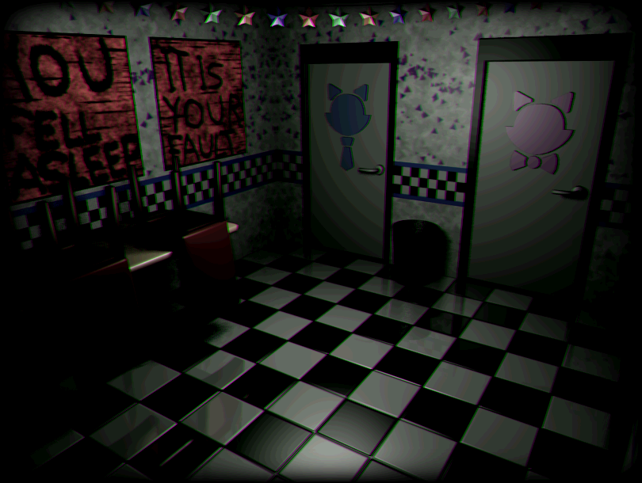

FIVE NIGHTS AT CANDYS
desenvolvedor: emil mako
historia
O jogo se passa em 1987, na época em que FNaF 2 acontece. Pelo que se pode verificar no calendário, o jogo acontece de 16 de novembro de 1987 a 20 de novembro de 1987. A 6ª e a Custom Nights acontecem então nos dias 21 e 22 de novembro. Você joga como Mary Schmidt , que também trabalhava na fábrica de robôs. A atual formação de animatrônicos são Candy , Cindy , Chester , Blank (embora ele seja da geração anterior), e The Penguin . Esses animatrônicos são amigáveis para as crianças, mas agem de forma assustadora para os adultos, da mesma forma que os animatrônicos em FNAF 2. Mary adormeceu no trabalho em uma fábrica de robôs muitos meses ou antes de trabalhar na Candy's. Isso levou ao assassinato de várias crianças na máquina robô RAT . As partes cobertas de sangue foram usadas para fazer os animatrônicos do novo Candy. Esta é também a razão pela qual o boneco aponta para eles nas cenas entre as noites. As crianças que morreram na fábrica começaram a assombrar Mary por permitir a sua morte. A Marionete parece representar Mary e sua culpa, devido ao "MEU" e "SEU" serem usados como sinônimos. Algum tempo depois do incidente, Mary conseguiu um emprego na Candy's, onde acontecem os acontecimentos do jogo. Mary é caçada por animatrônicos durante toda a semana, terminando com Mary sendo demitida por adulterar os animatrônicos durante a noite personalizada. jogabilidade
Fan game da popular franquia Five Nights at Freddy's, a jogabilidade mudou em relação à série principal, como usar a visão noturna nas câmeras e manter as portas fechadas. A nova mecânica vem na forma de Visão Noturna nas câmeras e na adição de uma terceira porta em forma de janela do Escritório .desenvolvimento
Emil Ace Macko postou seu status em seu Tumblr e diz que não está morto e que está trabalhando em algo grande. Emil lança o primeiro teaser promocional de Five Nights at Candy's, uma foto de Candy com o texto "SOON". Ao clarear sob o texto, os números " 01000110 01001110 01000001 01000011 " ficam visíveis. Ao conversar com o binário, eles são traduzidos como "FNaC". Emil atualiza seu status para compartilhar outro teaser com Cindy e com o rótulo: “ Nós brincamos no escuro ” . Emil lança uma captura de tela mostrando uma versão beta de Five Nights at Candy's. A captura de tela mostra Candy ou Cindy na porta direita do The Office . Posteriormente, isso foi removido da página GameJolt, pois aparentemente outros jogos tinham aparência quase idêntica a ele. Emil compartilha um teaser em seu blog mostrando Old Candy olhando para o espectador e rotulado: “ EU VEJO VOCÊ ” . Emil atualiza seu status em seu blog que mostra um teaser estrelado por The Penguin com o texto “ FORA DE SERVIÇO ”. Emil lança um teaser em seu blog com Blank intitulado “ THE BROKEN ” . Após clarear, entre THE e BROKEN aparece o número 2, fazendo com que o texto diga “ THE 2 BROKEN ”. Emil lança o trailer de Five Nights at Candy's. Emil lança o teaser final na Gamejolt apresentando Vinnie com o texto, “ erros acontecem ”. O Rato (se iluminado) aparece atrás de Vinnie. Five Nights at Candy's é totalmente lançado uma semana depois do trailer.